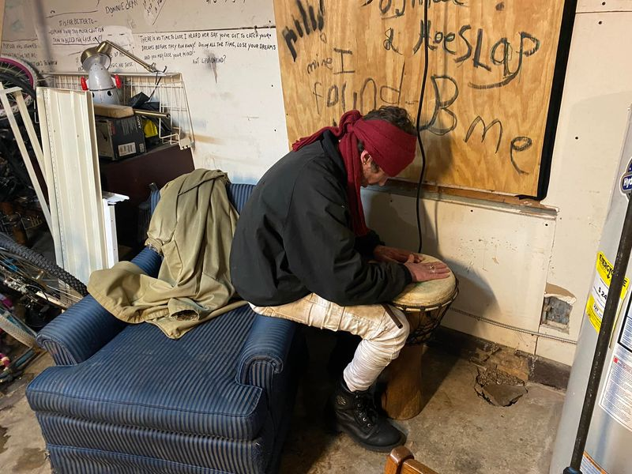

Mobile uploads
This is Kenny.
He has been working on this spoken word / drum piece called “Here kitty kitty.”
He uses the drum to represent an alligator that is crawling through a sewage drain. That’s an important part of it. He always corrects people if they ask if the alligator is in a river or lake. No! He is crawling through sewage.
He then uses different hand drum techniques to represent this slithering and slopping the alligator does in this sewage waste water.
As the alligator is crawling through this mess, he eventually spots an unsuspecting cat down the way.
It changes his focus from being in this gross muck to attempting to get to this cat.
He slides and slops his clawed feet through the thick disgusting sludge and every once in a while says, “here kitty kitty.”
It’s a powerful representation of the life of a man who has been homeless for years, had a home for a few months and then lost it.